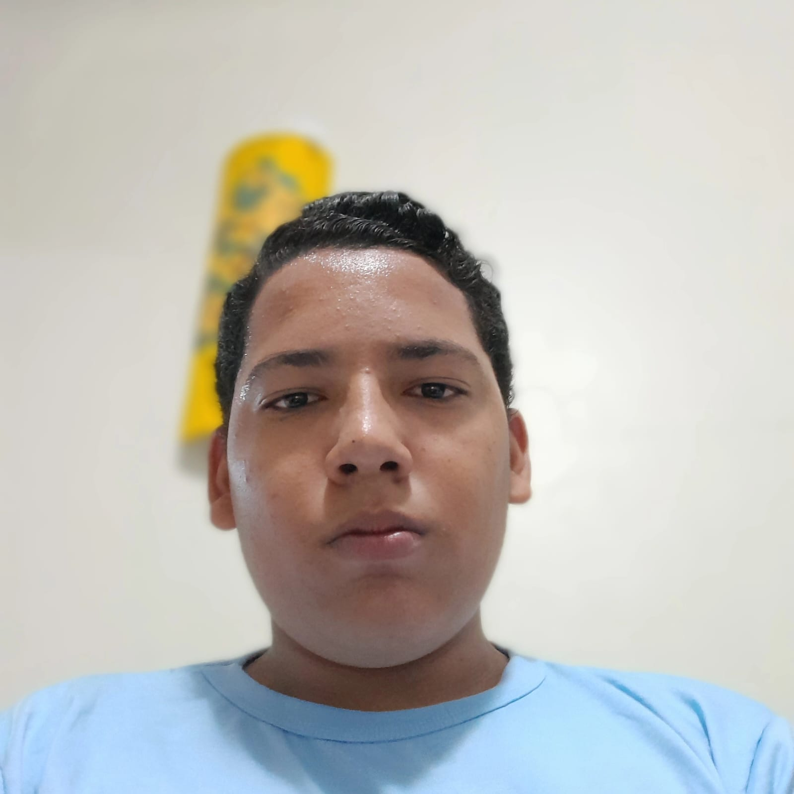
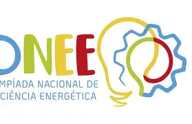
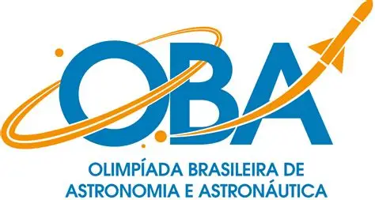
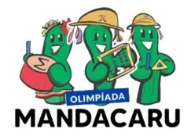
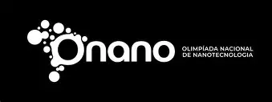
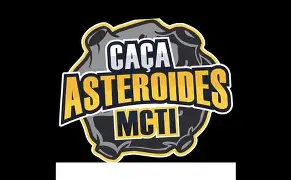

Pedro nasceu em Isaías Coelho, uma cidade pequena do Piauí. Sua história está ligada a um lugar de origem que ele carrega consigo enquanto constrói sua formação e amplia seus interesses por diferentes áreas.
Desde cedo, demonstrou curiosidade e dedicação aos estudos. Atualmente, é estudante do Instituto Federal do Piauí (IFPI), onde segue sua formação e se aproxima de diferentes áreas do conhecimento.
As pessoas próximas o descrevem como um jovem observador e persistente, sempre interessado em entender melhor o que acontece ao seu redor. A curiosidade aparece na maneira como busca aprender sobre temas diversos.
Esse interesse o levou a participar de olimpíadas científicas e a buscar novos conhecimentos. As competições fazem parte de uma jornada de aprendizado contínuo.
Vindo de uma cidade pequena do Piauí, Pedro constrói sua trajetória a partir de sua realidade e das oportunidades de formação que encontra. Seu percurso mostra que o interesse pela educação e o conhecimento é fundamental.
A melhor cidade: Isaías Coelho, Piauí, Brasil

Méritos acadêmicos
Alguns resultados conquistados com estudo e dedicação. As premiações apresentadas registram participações em áreas variadas e o interesse de Pedro por diferentes campos do conhecimento.

ONEE
Olimpíada Nacional de Eficiência Energética, voltada ao tema do uso consciente da energia.
Duas medalhas
A participação na ONEE aproxima os estudos de assuntos presentes no dia a dia, como energia e eficiência. Demonstra comprometimento com questões práticas.

OBA
Olimpíada Brasileira de Astronomia e Astronáutica, dedicada aos conhecimentos sobre o céu e a exploração espacial.
Medalha de prata
O reconhecimento com medalha de prata mostra interesse pela astronomia e exploração científica dos astros.

Olimpíada Mandacaru de Matemática
A competição propõe desafios matemáticos que valorizam o raciocínio e a busca por soluções.
Menção honrosa
A menção honrosa registra o desempenho em matemática e pensamento lógico.

ONANO
Olimpíada Nacional de Nanotecnologia, relacionada ao estudo da ciência e da tecnologia em escalas muito pequenas.
Destaque acadêmico OURO
O destaque acadêmico na ONANO mostra interesse pela inovação e tecnologia avançada.
Explorar tecnologias
Pedro gosta de conhecer novas tecnologias e descobrir como elas podem ser usadas para resolver problemas. Explorar esse campo significa observar como conhecimentos científicos se transformam em soluções práticas.
A tecnologia também abre espaço para aprender de forma prática: entender como um recurso funciona, investigar suas possibilidades e imaginar o que poderia ser criado ou aprimorado.
A astronomia é outro de seus interesses. Observar a Lua, os planetas e outros objetos do céu permite dedicar tempo à contemplação e à descoberta científica.
Entre tecnologia e astronomia há um ponto em comum: ambas estimulam a observação e a investigação.

Esses interesses acompanham sua trajetória acadêmica e ajudam a compor um retrato mais amplo do estudante.